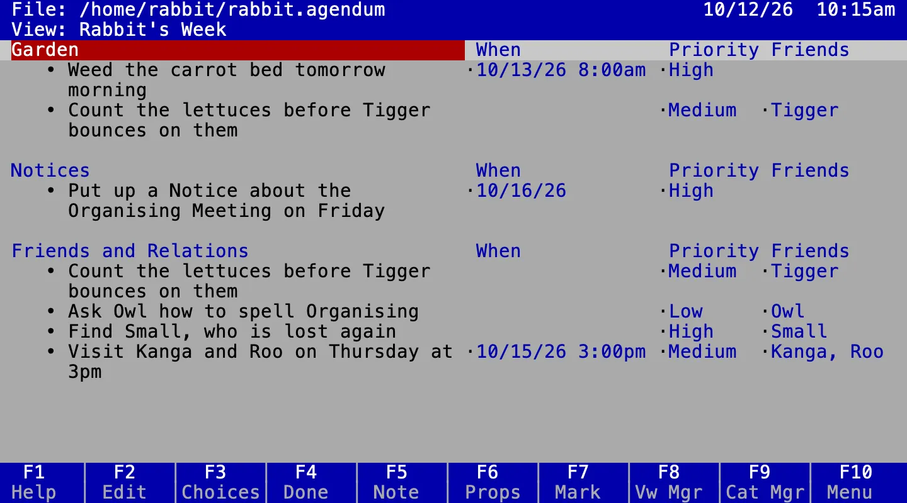

About
Agentic coding in the Hundred Acre Wood.
Wol is how Owl spells his name, pronounced wolz a-JEN-dum.
Coding using svensk möteskultur as a methodology.
Try it
Five minutes, on a Mac or Linux.
brew install jamting/agendum/agendum agendum --demo
- Uninstall by
brew uninstall agendum - Or download it from the releases
